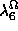
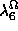
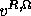
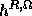

The first term in (1) is the usual discontinuous regularization term because of the line field terms and . This term is to take care of discontinuities. If there is a discontinuity, namely, the gradient becomes large, then the line function takes a value of 1 and hence there is a reduction in the cost contributed by the first term of (1). But then the cost contributed by this term would be a minimum assuming discontinuities everywhere. To overcome this we introduce a penalty term, namely, the second term of (1) which adds to the cost whenever a discontinuity is detected. The first two terms suggest that if the discontinuity is of significance then it is cheaper to introduce a line rather than trying to interpolate between the two pixels (meaning, if then introducing a discontinuity costs less than trying to interpolate). The choice of and depend on what variation in pixel intensity values would be significant enough to assume the presence of an edge.
The third, fourth, fifth, sixth and the seventh terms are the integration terms. The idea behind constructing these terms is the belief that if there is a feature in the right image then there should exist a corresponding feature in the left image, and the fact that the function takes a minimum value (in this case 0) only when x and y agree with each other, namely x=0=y or x=1=y; in our case the feature is a line field or equivalently an edge.
Remark: On occasions, we shall use the terms line field or edge interchangeably. Thus, in this paper, phrases like, precomputed edge map or precomputed line field mean the same thing.
The third, fourth, fifth, sixth and the seventh terms
adhere to the above belief. As an example consider the
third term in (1). First this term assumes the availability of the
disparity map . Now if there is a feature
in the left image, then we expect a corresponding feature in the right
image at pixel location , namely the feature
 . Similar arguments holds for the vertical line
fields. Thus the third term will be minimum when indeed there is a proper correspondence
between , and between
. Similar arguments holds for the vertical line
fields. Thus the third term will be minimum when indeed there is a proper correspondence
between , and between
 .
, , , 
and , can be looked upon as parameters that
determine the degree of influence of the other modules on the present module.
.
, , , 
and , can be looked upon as parameters that
determine the degree of influence of the other modules on the present module.
The third term integrates information obtained from the right edge detector
(, ) and
the matching block ( ); this integration is achieved via
and
); this integration is achieved via
and  .
Analogously, the fourth term integrates information
obtained from the interpolation block (
.
Analogously, the fourth term integrates information
obtained from the interpolation block ( ,
,  )
and the matching block (
)
and the matching block ( ). The effect of the third and the fourth term is
to re-enforce edges in the left image depending on the presence or absence
of edges in the right image and the interpolated scene. The fifth, sixth and the
seventh term are driven by the presence or absence of precomputed edges in the
left image.
). The effect of the third and the fourth term is
to re-enforce edges in the left image depending on the presence or absence
of edges in the right image and the interpolated scene. The fifth, sixth and the
seventh term are driven by the presence or absence of precomputed edges in the
left image.